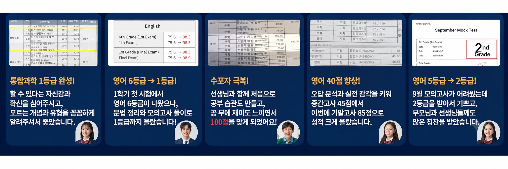

AI 전문 1:1 과외
수학·영어·국어 등 교과 수업에 AI 학습도구를 함께 활용해 학습 상태를 확인하고 수업 방향을 설계하는 1:1 과외
- 학습 성향 및 현재 수준 점검
- 과목별 기초 · 개념 중심 수업
- 학생별 맞춤 학습 방향 안내
- 방문 · 화상 수업 선택 가능
1995년 설립 이후
30년 이상의 교육 노하우
교과·AI·입시·수행평가
학습습관·인성·어학·진학
진행회원 월평균 3만명,
누적 회원 100만명 돌파
방문 또는 화상수업
선택 가능
교육청 등록 전문 선생님의 학년·과목 맞춤 1:1 수업
일반고·특목고·과학고·외고 학교 진도와 시험 일정에 맞춘 학습 설계
학년과 과목, 목표에 맞춰 세 가지 1:1 과외 중 알맞은 수업을 안내해 드립니다.
무료 상담에서 학생 상황을 확인한 뒤 수업 방향을 함께 정합니다.
수학·영어·국어 등 교과 수업에 AI 학습도구를 함께 활용해 학습 상태를 확인하고 수업 방향을 설계하는 1:1 과외
주요 교과를 중심으로 진행하는 시그니처 기본 프로그램
고급 맞춤 설계와 밀착 관리를 더한 프리미엄 수업
맞춤 커리큘럼, 취약점 진단, 수업 현황 공유로 학생의 공부 과정을 함께 관리합니다.
학생의 현재 수준에 맞춰 부족한 부분을 집중적으로 보완합니다.
AI 진단 데이터로 취약 단원을 확인하고, 선생님이 1:1 수업에서 이를 함께 참고해 맞춤 문제와 학습 방향을 조정합니다.
수업 내용과 이해도, 과제와 다음 계획을 학부모님과 공유합니다.
성적 변화부터 공부 습관, 목표 달성까지 실제 수업 사례를 확인해보세요.
모르는 개념과 문제 유형을 하나씩 꼼꼼하게 짚어 가며 공부했습니다. 할 수 있다는 확신이 생기면서 통합과학 1등급을 완성한 사례입니다.
1학기 첫 시험에서 6등급을 받은 뒤 문법을 처음부터 다시 정리하고 모의고사 풀이를 꾸준히 이어갔습니다. 그 결과 1등급까지 올라선 사례입니다.
수학에 대한 부담이 컸지만 선생님과 함께 처음으로 공부 습관을 만들었습니다. 공부에 재미를 느끼기 시작하면서 100점을 받기까지 이어진 사례입니다.
틀린 문제의 원인을 분석하고 실전 감각을 키우는 데 집중했습니다. 중간고사 45점에서 기말고사 85점으로, 40점을 끌어올린 사례입니다.
배운 내용을 꾸준히 다시 풀어 보고 틀린 유형을 반복해서 점검했습니다. 문제를 스스로 풀어내는 힘과 함께 학습 자신감도 높아진 사례입니다.
학습 방향을 먼저 분명히 정하고, 세운 계획을 흔들림 없이 이어갔습니다. 꾸준히 쌓은 학습이 1등급과 경희대 합격으로 이어진 사례입니다.
자주 틀리는 단원과 유형을 먼저 찾아내 그 부분을 집중적으로 보완했습니다. 약점을 하나씩 채워 가며 수학 1등급을 만든 사례입니다.
공부하는 시간과 순서를 함께 정리하며 학습 습관을 바꿔 나갔습니다. 스스로 목표를 세우게 되면서 공부의 방향이 분명해진 사례입니다.
학생의 성향에 맞는 공부 방법을 함께 찾아 수업에 적용했습니다. 스스로 계획하고 실천하는 자기주도 학습 습관이 자리 잡은 사례입니다.
흔들리던 수학 학습을 처음부터 다시 정비하고 학습 흐름을 새로 세웠습니다. 다시 잡은 수학 공부를 끝까지 이어가 대학 합격으로 이어진 사례입니다.

방문과외·화상과외 상담 전에 학부모님이 자주 물어보시는 내용을 정리했습니다.
과외 선택부터 내신 대비, 공부법까지 학생과 학부모님이 자주 묻는 내용을 정리했습니다.
과외를 결정하기 전, 먼저 아이의 현재 상황부터 확인하세요.
학생의 학년 · 희망과목 · 현재 고민을 알려주시면 상담에 필요한 내용을 순서대로 확인할 수 있습니다.
학생의 학년·과목·수업 방식과 현재 학습 상황을 남겨주시면 상담 내용을 확인해 안내드립니다. 상담 후 무료수업을 통해 수업 방식과 학습 방향도 확인할 수 있습니다.
무료수업 상담하기